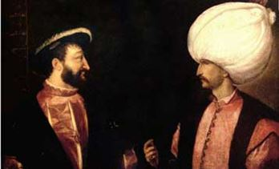
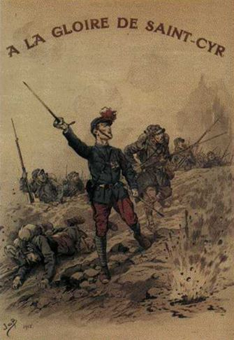

C’est entendu, Poutine sert le côté obscur des forces du mal. L’oncle Sam, le haut-de-forme de travers, désigne d’un doigt vengeur les ennemis de l’Amérique, tandis que Marianne en France souveraine cache son sein blanc de peur qu’on lui impose un jour le voile de la pudeur islamique.
La princesse Europa fille du roi de Tyr prend les traits de Merkel et songeant à la légende s’éloigne des taureaux1. L’Angleterre encore Royaume mais de moins en moins unie, comme elle l’a toujours fait, se réfugie sur son île et nous plante à Calais. Nos frontières sont poreuses, et notre jeunesse fout le camp. Le Turc lorgne l’Europe, et la blanche colombe s’envole à tire d’aile. Notre occident cherche sa voie, reniant son histoire en pensant que l’Islam est une religion comme une autre, refaisant le chemin de Damas à l’envers2.
En 1939, la France portait son regard au Levant. C’est en Syrie qu’elle allait chercher la gloire avant de connaitre la défaite.
Entre la Syrie et la France c’était déjà une longue histoire. En 1860 Napoléon III s’était porté au secours des chrétiens maronites dont plusieurs milliers étaient massacrés par les musulmans et les Druzes, les chrétiens du Liban étaient sous protection française. Aujourd’hui on les laisse crever.
Quelques siècles auparavant, François 1° parlait avec Soliman le magnifique.
Aujourd’hui, Hollande, le président normal, ce Napoléon du minuscule ne parle à personne et pense agir sur le conflit syrien en toisant Poutine et en l’accusant de crime de guerre, alors que notre France en Libye, et probablement en d’autres lieux et à d’autres époques, dussé-je choquer, n’a pas le cul propre.
On arme des milices islamiques radicales opposées à Hassan dont les modes d’action terroriste et la haine envers l’occident ne font aucun doute, pire, on les reçoit à l’Elysée. Quand on dîne avec le diable, il faut se munir d’une longue cuillère, les amateurs devraient s’en abstenir.
Notre époque est celle de l’ignorance. Au siècle des lumières, Voltaire rêvait de despotes éclairés, aujourd’hui notre roitelet éteint se répand dans un livre, livrant au passage par inadvertance des secrets d’état, quant au précédent n’écoutant que son courage, donnait son oreille à un philosophe pédant, en bras de chemise et col ouvert, metteur en scène de son modeste éclat, zigoto va-t’en guerre, usant de son faible pouvoir, montrant la lune au roi qui ne vit que le doigt.
Oui, il est vrai, que ce n’était pas mieux avant, je n’ai aucune nostalgie de Staline, d’Hitler, de Pol Pot et de leurs terribles confrères. Au concours de qui fut le plus sanglants, la palme reviendrait peut-être à des candidats hors concours. Ils firent tous de la terre, une éponge de sang.
A Kiev, Petro Porochenko, (selon le magazine Forbes, sa fortune serait estimée à 1,6 milliard de dollars) désigne comme seul et unique coupable des provocations, la Russie et Poutine. Ce même Porochenko, avant son élection, est d’ailleurs invité au palais de l'Élysée par le président de la République française, François Hollande, en compagnie de Vitali Klitschko et de Bernard-Henri Lévy, notre ministre des affaires étrangères bis. C'est d’ailleurs, ce dernier qui convainc le président français d’inviter Petro Porochenko aux côtés de Vladimir Poutine sur les plages de Normandie pour la célébration du Débarquement, le 6 juin 2014. Hollande et Sarkozy méprisent les diplomates de métier comme ils méprisent les magistrats, les flics et les militaires. Sur ce plan là, comme sur d’autres sous la toise de leur grandeur, ils atteignent les mêmes sommets.
Curieuse conception de la diplomatie Hollandeste qui consiste à se mêler des élections ukrainiennes par pure idéologie droit-de-l'hommisme. Provocation gratuite, contre-productive et infamante, à l’égard de Poutine à qui on peut reprocher beaucoup de choses, mais certainement pas celle d’avoir une vision cohérente du monde.
Qui provoque qui ? On sait que l’enjeu est plus celui d’un affrontement d’une autre nature, celui des E.U et de l’OTAN contre une Russie qui veut reprendre sa place sur l’échiquier international. On dénommait Fabius comme étranger aux affaires.
Que dire de son successeur, J.M Ayrault, décrit par notre inénarrable président comme un inactif, inefficace dans les médias ?... La poêle qui se moque du chaudron ! Les Zig et les Zags de notre politique internationale considérée à juste titre comme une caricature de celle menée par les E.U et si peu lisible, qu’à l’issue du quinquennat, le citoyen ne sait pas qui mène réellement la politique étrangère de la France ? Serait-ce le ministre de la défense qui a eu quelques succès dans les exportations ? Seraient-ce les Ministres des affaires étrangères, Fabius puis Ayrault ? Serait-ce BHL, le mari de la chanteuse refaite, petite-fille de Maurice Garreau-Dombasle, consul de France à Calcutta dans les années 1920, premier diplomate français à rejoindre le général de Gaulle à Londres en 1940, qui fonde la représentation de la France libre aux États-Unis la même année ? BHL tenterait-il de laisser une place dans l’histoire pour égaler l’aïeul de sa dulcinée ? Oui bien le vide étant ce qu’il est, serait-ce les conseillers particuliers dont Madame Soleil, l’émir Khalifa ben Zayed Al Nahyane, président des émirats arabes unis, John Kerry ?
Il n’en reste pas moins que nous sommes en guerre depuis longtemps et pour un sacré bout de temps.
Non, la guerre n’était pas plus jolie lorsqu’on s’écharpait sur les champs de bataille au son du fifre et du tambour, La charge de la brigade légère dirigée par Lord Carigan au cours de la bataille de Balaklava le 25 octobre 1854 lors de la guerre de Crimée fut si désastreuse qu’elle est restée dans l'histoire et Alfred Tennyson en a fait un poème, The Charge of the Light Brigade, « Il n'y a pas à discuter / Il n'y a pas à s'interroger / Il n'y a qu'à agir et mourir », l'absurdité de la guerre peut être aussi britannique. Plus tard, on montait parfois à l’assaut des tranchées en casoar et gants blancs. La boucherie n’était pas plus joyeuse. L’histoire a retenu l’exemple du sous-lieutenant de Fayolle, âgé de 23 ans. Sa troupe est épuisée, fixée par le feu ennemi, les hommes n’avançaient plus, calmement, il enfile ses gants blancs, fixe le casoar à son képi et leur dit « Et maintenant, allez-vous me suivre ? » Nous étions le 22 août 1914. 310 des 535 élèves de la promotion « de la Croix du Drapeau » meurent pour la France (soit 58 %).
Qui décidera de l’utilité de son geste ou pas ? Qui décidera de l’utilité du sacrifice des cadets de Saumur dans la débâcle de 1940 ? Qui décidera de l’utilité ou pas du sacrifice de l’élite de l’armée française à Dien Bien Phu ?
Aujourd’hui on s’étonne des effets collatéraux des guerres alors que les frappes à distance sont censées épargner les civils. C’est sans tenir compte, à Alep comme ailleurs, de l’imbrication entre combattants actifs et une population plus ou moins complice, servant de bouclier. C’est entendu, Bachar est un salaud mais en face ce ne sont pas des anges. La Russie ne veut pas perdre Tartous, elle ne lâchera pas la Syrie et tant que Bachar sera utile, elle ne lâchera pas Bachar.
A Mossoul une bataille sans stratégie réellement définie se déroule, un corridor est laissé ouvert dans l’espoir d’éviter un combat en zone urbaine à l’issue incertaine. C’est sans compter avec une population sunnite plutôt favorable à l’EI.
Qui se souvient que le 6 juin 2014, l'État islamique en Irak et au Levant allié à des tribus et des groupes armés sunnites régionaux lance une offensive sur la ville de Mossoul et la conquiert après seulement quatre jours de combat. Cette « coalition » était composée des forces de l'Armée des hommes de la Naqshbandiyya (JRTN), de l'Armée islamique en Irak, d’Ansar al-Islam, des Brigades de la révolution de 1920, du Front islamique pour la résistance irakienne, proches des Frères musulmans.
Aujourd’hui, selon les dernières informations des services de renseignements irakiens, l'organisation aurait encore à sa disposition entre 5000 à 6000 combattants dans Mossoul, dont 4000 à 8000 combattants djihadistes pour assurer la défense de la ville. Toujours très lourdement armés, les djihadistes ont eu des années pour se préparer à cette offensive. Pour retarder l'avancée des forces irakiennes, les routes ont été coupées et minées et le mode d’action kamikaze risque de désorganiser notamment les troupes irakiennes les moins aguerries.
Les civils sont utilisés comme bouclier humain à l'intérieur de la ville. En effet, rien de bien nouveau. La guerre, ça tue, bourreaux et innocents.
Face à eux, 30000 hommes de l’armée irakienne fortement soutenue par les américains, 4000 peshmergas kurdes qui attaquent les djihadistes de l'EI par le nord et l'est, complétés par les milices chiites des Forces de mobilisation populaire qui ont annoncé qu'elles allaient se battre au sol en soutien de l'armée irakienne.
Cependant leur soutien pose un problème. Les miliciens ont déjà été accusés d'exactions dans des secteurs repris à l'EI, contre les populations sunnites. A priori donc ni ces milices chiites, ni les peshmergas ne pénétreront dans Mossoul. On verra si la stratégie de la coalition menée par les EU sur Mossoul en Irak sera plus efficace que celle du rouleau compresseur, mené par le couple Russo-syrien à Alep, en Syrie.
On verra aussi sur le moyen terme, si les conséquences humanitaires sont différentes. On verra enfin si l’aide apportée par les occidentaux à certaines milices islamiste est efficace et si celle-ci les remercieront avec quelques attentats ciblés. Quand on dîne avec le diable ... etc...
Ce monde est une vaste pièce de Théâtre, face à la scène, certains observent du poulailler la pièce qui se déroule dans l’attente de leur heure. Mossoul tombera, Alep aussi, mais nous risquons d’y perdre notre âme car nous avons perdu nos certitudes, nous avons voulu nous mêler de « l’orient compliqué » sans comprendre leur culture, sans en avoir la compétence, en suivant aveuglément une politique américaine totalement hors du temps et des réalités.
Notre diplomatie sans vision, sans queue ni tête, repose sur un affaiblissement vertigineux de notre pays, où les flics sont contraints de mener des opérations « nuit-debout » pour réclamer des moyens, où les quatre ministères régaliens, intérieur, défense, justice, éducation ont été affaiblis par des politiques irresponsables.
De Villepin, devant l’assemblée des Nations-Unies disait que : « ce vieux pays, la France, d'un vieux continent comme le mien, l'Europe, ... qui a connu les guerres, l'occupation, la barbarie. Un pays qui n'oublie pas et qui sait tout ce qu'il doit aux combattants de la liberté venus d'Amérique et d'ailleurs. Et qui pourtant n'a cessé de se tenir debout face à l'Histoire et devant les hommes. Fidèle à ses valeurs, il veut agir résolument avec tous les membres de la communauté internationale. Il croit en notre capacité à construire ensemble un monde meilleur. »
Construire un monde meilleur ne peut se faire en excluant certains pays. Parler à Poutine comme aux autres dirigeants, apparait aujourd’hui comme indispensable.
Auparavant, il conviendra d’éliminer chez nous, les amateurs. La tâche est immense, en l’état, je n’ai pas de solutions immédiates. C’est collectivement que nous les trouverons, sans quoi, on continuera à mourir en regardant des feux d’artifice, en écoutant des concerts, aux terrasses des cafés.
Tout est lié, aucun problème ne peut être dissocié des autres, la place de la France dans le monde est consubstantielle de sa propre sécurité sur son sol. La future élection présidentielle sera décisive, il est exceptionnel de se tromper deux fois de suite, se tromper une énième fois accentuerait notre déclin.
R.P.
1La légende raconte qu'Europe, princesse phénicienne, fille d'Agénor roi de Tyr, se promenant un jour au bord de la mer avec ses compagnes, fut remarquée par Zeus. Enflammé par sa beauté, il se métamorphosa en taureau aux cornes semblables à un croissant de lune et vint se coucher aux pieds de la jeune fille. Celle-ci d'abord effrayée, s'enhardit, caressa l'animal et s'assit sur son dos. Aussitôt le taureau se releva et s'élança vers la mer. Malgré les cris d'Europe, qui se cramponne à ses cornes, le taureau pénétra dans les flots et s'éloigne du rivage. Tous deux parvinrent ainsi jusqu'en Crète où Zeus s'unit à la jeune fille.
2Episode biblique : Paul de Tarse se convertit au christianisme sur le chemin qui le menait à Damas
Partager cette page